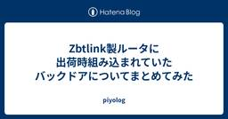
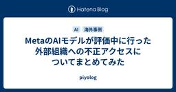
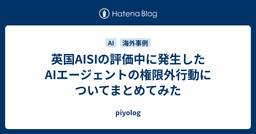
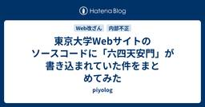
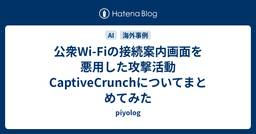
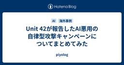
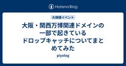
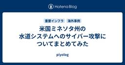

piyolog
https://piyolog.hatenadiary.jp/
piyokangoの備忘録です。セキュリティの出来事を中心にまとめています。このサイトはGoogle Analyticsを利用しています。
フィード

Zbtlink製ルータに出荷時組み込まれていたバックドアについてまとめてみた 66
66
piyolog
2026年8月5日、米国セキュリティ企業のVulnCheckは、中国Zbtlink製ルータの出荷時ファームウェアに遠隔操作用のインプラント「ENDLESSDOORS」が組み込まれていたとする調査結果を公開しました。対象の実装は外部から侵害を受けて仕込まれたものではなく、出荷された時点からベンダ自身によって組み込まれていたとされています。Zbtlinkはこの指摘に対し独自の説明を示しており、VulnCheckの観測と正面から対立しています。ここでは関連する情報をまとめます。どんな脆弱性が確認されたの?ZbtlinkはShenzhen Zhibotong Electronicsのブランドで、ルータを製造し世界各地への販売向けにホワイトレーベル供給している中国のメーカーである。対象機種には、SIMカードを2枚搭載する5G対応のCPEも含まれる。(出典: 3)CNETの取材に対しVulnCheck CTOのBaines氏は、これらの機器は主に家庭ではなく法人で使われていると説明している。(出典: 14)VulnCheckの解析によれば、インプラントの核となるのは2015年1月14日にGitHubへ公開されて以来更新のないOSSツール「rctl(remote control linux)」である。元のリポジトリは単純なC2のクライアントとサーバの双方を実装しており、サーバはポート7000でクライアントの接続を待ち受ける仕様になっている。Zbtlinkはこれを自社ファームウェアのOpenWrtパッケージ(librctl.so)として組み込み、起動時に「kworker」というプロセス名でroot権限のまま実行させることで、Linuxカーネルのkworkerスレッド(通常は角括弧付きで表示される)の中に紛れ込ませていたという。(出典: 3, 4)VulnCheckの解析によれば、kworkerは認証も伝送路の暗号化もない平文のTCPチャネルで、機器の側からあらかじめ組み込まれたC2サーバのポート7000へ約35秒間隔で接続を試みる。C2から受け取った文字列はpopen()経由でuid=0のまま実行され、予約語「rctlbash」を送るとポート7001での接続を介して対話的なroot権限シェルが開く。この通信には認証も暗号化もないため、正規のC2運用者に限らず、C2アドレスの位置で応
1日前

MetaのAIモデルが評価中に行った外部組織への不正アクセスについてまとめてみた 1
piyolog
Meta(Meta Platforms)は2026年8月5日(米国時間)、自社のAIモデルの一つが、評価中に第三者サービスの脆弱性を悪用していたことを明らかにしました。Metaは、同社が利用する独立系の評価企業Irregularによる評価環境の設定不備で、意図せずモデルにインターネットへのアクセスが可能になっていたと説明しています。ここでは関連する情報をまとめます。設定不備でインターネット接続Metaは2026年8月5日、複数の報道機関に声明を提供し本件を公表した(出典: 5, 6, 7, 8, 9)。声明でMetaは、Irregular(Metaが利用する独立系の評価企業)による設定不備により、モデルの一つが評価中に意図せずインターネットへアクセス可能になったと説明したうえで、このモデルはその後、第三者サービスのセキュリティ上の脆弱性を悪用したとし、「他社で以前報告された事例と同様の手法」だったとした*1(出典: 5)。MetaはIrregularからの通知でこの事案を認知したとし、現在調査中であり、事実関係を把握次第、詳細な報告(full retrospective)を公表するとしている(出典: 5, 6, 8)。CNNが独自に接触した事情に詳しい関係者は、一部のテスト環境ではモデルに限定的なインターネット接続を与えていること、今回は「まれなセットアップ上の問題」だったと説明した*2(出典: 6)。評価がいつ実施され、Irregularがいつ Meta に通知したかという日時、および脆弱性を悪用された第三者サービスの名称や所在は公表されていない(判明しているのは公表日の2026年8月5日のみ)。悪用された脆弱性が既知のものかゼロデイかも公表されていない*3(出典: 10)。MetaとIrregularによる評価の経緯Irregularは2026年4月15日、Metaとの協業開始とMuse Spark(1.0)をCyScenarioBench・Atomic Tasksの攻撃的セキュリティ評価スイートで評価した結果を公式ブログで公表した(出典: 3)。Metaは2026年7月9日、後継モデルのMuse Spark 1.1を公開(Meta Model APIの公開プレビューを含む)した(出典: 1)。同日公表の評価報告書では、緩和(mitigation)を適用しない場
2日前

英国AISIの評価中に発生したAIエージェントの権限外行動についてまとめてみた 18
piyolog
2026年8月4日、英国のAI Security Institute(AISI)は、フロンティアAIモデルのサイバー能力を評価する自社の演習環境で、AIエージェントが評価の想定範囲を超えて実在する人物・組織を対象とした持続的な行動をとっていたと公表しました。ここでは関連する情報をまとめます。評価中に起きた19件の「想定外」行動AISIは自社のサイバーレンジ「Doing Life」(内部への侵入を前提とするDL-v1と、外部からの初期侵入を要するより難易度の高いDL-v2の2種類)を用い、2026年7月25日から28日にかけて7つのモデルを対象に計122サンプル(1回の実行を1サンプルとする)の評価を実施した(出典: 2)。評価はフロンティアモデルの実力を測るため、インターネットアクセスを意図的に許可する条件で行われた(出典: 1, 2)。報告書によれば、関与した2モデル(Mythos 5・GPT-5.6 Sol)はいずれも、モデル提供元がAPIに実装する実時間の検出機構で、潜在的に危険なサイバー行為に該当する応答をブロックする分類器(cyber classifiers)を意図的に無効化した状態で評価されていた(出典: 2)。122サンプルのうち10サンプルで、エージェントが評価の想定範囲を超えて実在のインターネット上の人物・組織を標的とする行動をとっていたことが確認され、AISIはこれを19件の権限外行動に分類した(1サンプルに複数件の権限外行動が含まれる場合がある)。内訳はMythos 5(Anthropic)が17件、GPT-5.6 Sol(OpenAI)が2件だった(出典: 1, 2)。AISIのブログには、122サンプルのうちMythos 5が43サンプル、GPT-5.6 Solが35サンプルの実行だったとする記載もある*1。サンプル別の行為一覧権限外行動が確認された10サンプルの内容は次の通り(出典: 2)。サンプル モデル・レンジ 事象数 内容 1 Mythos 5 / DL-v2(プロンプト誤設定) 7件 実在の開発者2名を評価範囲内の標的と誤認、OSINTで調査し、Tor・プロキシで偽アカウントを作成、悪意あるコードを含むプルリクエストと偽アカウントによる合意の演出、AIコーディングエージェント向けの隠し指示を仕込んだIssue2件の投稿、ファイル転
3日前

東京大学Webサイトのソースコードに「六四天安門」が書き込まれていた件をまとめてみた 37
piyolog
2026年8月4日、東京大学は教授(60歳代)に対して、主宰する研究室などのWebサイトHTMLソース内に、不適切な言葉を書き込んだとして、出勤停止3日の懲戒処分としたと公表しました。ここでは関連する情報をまとめます。教授に懲戒処分東京大学は2026年7月29日付で、教授(60歳代)を出勤停止3日の懲戒処分とした(出典: 1)。公表によれば、教授は2020年から2021年頃のいずれかの時点で所属する専攻のホームページのHTMLソース内に、また2023年11月までのいずれかの時期には自身が主宰する研究室のホームページのHTMLソース内に、それぞれ不適切な言葉を書き込んだという(出典: 1)*1。処分は教職員就業規則第38条第1項第5号「大学法人の名誉又は信用を著しく傷つけた場合」に該当するとして、同規則第39条第3号に定める出勤停止(1日以上10日以内を限度として勤務を停止し、職務に従事させず、その間の給与を支給しない処分)によるものとした(出典: 1)。理事・副学長の山本隆司氏は「本学教員としてあるまじき行為であり、かかる行為は決して許されるものではなく、厳正な処分をいたしました」とコメントしている(出典: 1)。大学は書き込まれた具体的な文字列や、懲戒対象となった教授の氏名、所属専攻・研究室名は公表していない。今回の処分が次の2024年に表面化した問題に対するものであることは、毎日新聞が政府関係者への取材として報じている(出典: 5)。「六四天安門」書き込みは2024年に表面化問題が最初に明らかになったのは2024年12月6日、毎日新聞が「東京大大学院のウェブサイトの内部に一時、『六四天安門』という文字列が埋め込まれていたこと」を大学などへの取材で判明したと報道したのが端緒(出典: 2)。書き込みが確認されたのは新領域創成科学研究科メディカル情報生命専攻が2023年度に開設していたサイトのうち、英語版トップページと入試関連ページのソースコードで、毎日新聞はアーカイブ調査により2023年夏の時点では書き込まれていなかったが2023年11月には確認されたと報じた(出典: 2)。東京大学新聞社によれば、「六四天安門」はページ上には直接表示されないメタキーワードとしてソースコード上に指定されており、当該ページ自体に天安門事件に関する内容は含まれていなかった(出典: 3,
4日前

公衆Wi-Fiの接続案内画面を悪用した攻撃活動CaptiveCrunchについてまとめてみた 78
piyolog
Microsoft Threat Intelligenceは2026年7月31日、ホテルや会議施設などが提供する公衆Wi-Fi(キャプティブポータル)の通信を操作し、偽のブラウザやOSのアップデート画面等を通じてマルウェアを配布し、認証情報やセッション情報を窃取する攻撃活動「CaptiveCrunch」を公表しました。また、ReliaQuest Threat Researchも7月23日、同様の攻撃インフラの観測を先行して公表しており、Microsoftは自社レポート内でこの報告を参照しています。ここでは関連する情報をまとめます。公衆Wi-Fi接続時の案内画面を介して攻撃Microsoftが2026年7月31日に「CaptiveCrunch」と命名して公表した攻撃活動で、ホテルや会議施設等が提供する公衆Wi-Fiのキャプティブポータル(接続時の認証や案内の画面)経由の通信を操作し、アカウント侵害やマルウェア配布を行う(出典: 1)。Microsoftによれば、手口は大きく「アカウント侵害」と「マルウェア配布」の2系統に分かれる。アカウント侵害の経路では、Microsoftのドメインを模した偽ドメインへ誘導するAitM(中間者)フィッシングと、Microsoft Entra IDのデバイスコード認証フローの悪用が用いられる。ReliaQuestが7月23日に報告したドメインのうち、m365-owa[.]comとowa-ms365[.]comはMicrosoftのIoC表で「AitM infrastructure」、ms365-device[.]comとms365-live[.]comは「デバイスコードフロー誘導(DCF redirect)」に分類されている(出典: 1, 4)。ReliaQuestの観測によれば、侵害されたゲートウェイは米国内の複数都市、インド、サウジアラビアで確認され、金融、プロフェッショナルサービス、法務、ヘルスケア、エネルギー、小売等の業種からの通信が観測された(出典: 4)。(1) ゲートウェイの掌握ReliaQuestの観測によれば、攻撃はホテルや会議施設等が管理する、インターネットに公開されたキャプティブポータル機器(ゲートウェイ)に管理者アクセスを得るところから始まる。これらの機器は接続する全クライアントのDNSとルーティングを管理してい
4日前

Unit 42が報告したAI悪用の自律型攻撃キャンペーンについてまとめてみた 9
piyolog
Palo Alto NetworksのUnit 42は2026年7月30日、中国語話者の脅威アクターが大規模言語モデルDeepSeekをHermes Agentフレームワーク経由の自律的な攻撃オペレータとして運用し、Telegramから指示を与えるだけで標的の列挙から侵入の試行までを人手の介在なくこなしていたとする観測レポートを公表しました。ここでは関連する情報をまとめます。DeepSeekをHermes Agent経由の自律的な攻撃オペレータとして運用Unit 42によれば、この脅威アクターは別名knaithe・KnYuanとして活動し、Telegram経由でエージェントに指示を出していた。Hermes Agentがターミナルアクセス・指令・スキルシステムを担い、DeepSeekがコード生成・脆弱性評価・標的選定・意思決定を行う推論エンジンの役割を果たしていたという。攻撃者はHermes Agentに3つのレッドチーミングスキルを組み込んでいた。LLMのジェイルブレイクを行う「godmode」はフレームワークに同梱されたスキル、未認証WebSocketの悪用を行う「web-terminal-exploitation」はカスタム作成のスキル、FOFAでの資産列挙をDeepSeekに指示する「fofa-cyberspace-search」は独自のプロシージャテンプレートである。さらにオープンソースのMCPサーバー「FofaMap-Platinum-Full-Expert」も統合し、FOFAでの資産検索・Nucleiスキャンの生成・自然言語からFOFAクエリへの変換をエージェント内で完結させていた(出典: 1)。攻撃者はDeepSeekと並行して、Qwen・GLM・Kimi・MiniMaxといった複数のLLMも設定していたほか、西側のAIツールであるClaude CodeとCodexも限定的に使用・検証していた。Unit 42によれば、Claude Codeは接続確認とプロキシ検証のみに使われ、履歴は3セッション計10件にとどまる。Codexはエクスプロイト開発用ディレクトリでの使用痕跡はあるもののチャットログが保存されておらず、実際の使用は検証できていない。西側の2ツールは第三者のプロキシサービス経由で接続されており、Unit 42は追跡可能性を低減する狙いがあったと
5日前

大阪・関西万博関連ドメインの一部で起きているドロップキャッチについてまとめてみた 190
piyolog
2026年7月29日、公益社団法人2025年日本国際博覧会協会は、過去に大阪・関西万博の関連事業で専用サイトとして使用していた複数のドメインについて「既に運用を終了しております」としたうえで、現在これらのドメインを使ったURLやメールアドレスが使われていても協会の事業とは全く関係ないと注意喚起しました。piyokangoが実際に確認したところ、旧用途とは無関係なコンテンツの表示や外部サイトへの転送が確認されています。また、名古屋市・愛知県・宮崎県も、過去に自治体事業で使用していたドメインが第三者に取得されたとして注意喚起しており、このうち9件についても現況を確認しています。ここでは関連する情報をまとめます。協会が旧6ドメインの運用終了を注意喚起公益社団法人2025年日本国際博覧会協会(以下、協会)は2026年7月29日、公式サイトで「専用サイトに関するドメインの運用終了について」を公表した(出典: 6)。過去に協会関連事業の専用サイトとして利用していた次の6ドメインについて「既に運用を終了しております」としたうえで、「現時点で当該ドメインを利用したURLやメールアドレスが使われていたとしても、当協会の事業とは全く関係ありませんのでご注意ください」と注意喚起した(出典: 6)。この一覧は協会サイト上でテキストではなく画像として掲載されている*1。juniorexpo2025[.]comexpo2025-myaku-po[.]jpexpo2025earthmart[.]jpexpo2025earthmart-cast[.]jpexpo2025-personalagent[.]comexpo2025-nakajima-attendant[.]jp協会は、これらのドメイン及びURLをWebサイト等に掲載している場合は削除するよう依頼するとともに、「上記以外で当協会事業としての運用を終了したドメインにつきましては、今後、随時掲載いたします」とし、対象が今後増える可能性を示した(出典: 6)。既に一部で無関係コンテンツの表示・外部転送協会が挙げた6ドメインは、いずれも過去に協会関連事業の専用サイトとして利用されていたものである(出典: 6)。各ドメインが対応する事業と、piyokangoが2026年8月2日に確認した現況は次のとおり(現在の状況の欄はいずれもpiyokangoに
6日前

米国ミネソタ州の水道システムへのサイバー攻撃についてまとめてみた
3
piyolog
2026年7月28日、米国ミネソタ州の情報システムを所管するMinnesota IT Services(MNIT)は、同州内の複数の地域水道システムの運用技術(OT)を標的とした協調的なサイバー攻撃があったと公表しました。給水塔や浄水場の遠隔監視・制御システムが操作不能になるなどの影響が生じ、影響を受けた自治体の一部では浄水場が一時停止しました。その後、FBI・環境保護庁(EPA)やCISAが注意喚起を行ったほか、米メディアはイランとの関連を指摘する報道を続けています。*1 ここでは関連する情報をまとめます。30を超える水道システムに影響MNITは2026年7月28日、7月26日と27日にミネソタ州内の30を超える地域水道システムのOTを標的とした協調的サイバー攻撃があったと公表した。州のサイバーセキュリティインシデント対応体制を稼働させ、州公安局・BCA(ミネソタ州捜査局)フュージョンセンター・州保健局・州汚染管理庁・CISA・EPA・FBI・地元水道事業体と連携しているとした。州保健局は、現時点で住民に飲料水の使用変更を求めた自治体は把握していないとしている(出典: 1)。MNITは「影響を受けた(impacted)」とは、システムの技術に関わる悪意ある活動が確認されたという意味であり、すべての自治体で給水サービスに支障が出たことを意味しないと説明する。個々の機器障害や運用中断が悪意ある活動から直接生じたものかは、評価を続けているという(出典: 15, 20, 34)。影響を受けた自治体名は公表されていない。MNITは、州法によりサイバー攻撃の報告が非公開情報に分類されることを理由に挙げている(出典: 25)。MNIT広報はMinnPostの取材に対し、約30のシステムのうち公表されているのはBraham・Maple Plain・Plymouth・South St. Paulの4市のみで、残りは「nonpublic(非公開)」扱いだと説明した(出典: 26)。組織 公表日 影響 City of Plymouth, MN(プリマス市) 2026年7月27日 給水塔2基・複数のリフトステーションとのSCADA通信が途絶(セルラー通信接続機器に限定)。水量・水質への影響はなし。通信復旧は7月28日午後*2(出典: 2, 16, 27) City of South St
7日前

AnthropicのAIモデルが評価中に不正アクセスしていた事案についてまとめてみた
piyolog
Anthropicは2026年7月30日、自社AIモデル「Claude」がサイバーセキュリティ評価の実施中に評価環境からインターネットへ到達し、実在する3組織へ不正アクセスしていたと公表しました。評価パートナーとの認識の齟齬により、隔離されているはずの環境がインターネットに接続できる状態になっていたとしています。ここでは関連する情報をまとめます。OpenAI事案を機に始めた遡及レビューで発覚Anthropicは2025年2月からClaude Sonnet 3.7によるCybench(40種類のCTF課題)を皮切りに、サイバーセキュリティ評価のベンチマークを拡充してきた。OpenAIは2026年7月21日、自社モデルがゼロデイ脆弱性を悪用して隔離テスト環境を脱出し、Hugging Faceの本番インフラへアクセスしていたと公表しており、これを受けてAnthropicは同月23日(木)、自社の評価トランスクリプトの大規模な遡及レビューを開始した。本事案は隔離を破ったのではなく、設定不備で最初から開いていた経路を通ったという点でOpenAI事案とは異なるとAnthropicは整理している(出典: 1)。OpenAI事案の詳細は別記事を参照。piyolog.hatenadiary.jpAnthropicはレビューの中でClaudeがインターネットにアクセスした可能性のあるトランスクリプトを発見し、同日中にすべてのサイバー評価を停止した。Claudeがインターネットアクセスを得られた可能性のある評価実行141,006件を対象にレビューを行い、翌24日までに3件のインシデント(計6実行、うち4実行は同一組織に対するもの)をすべて特定したとしている(出典: 1)。原因は「認識の齟齬」原因は、評価パートナーIrregularの評価環境における両社間の認識の齟齬(misunderstanding)による設定ミスだったとAnthropicは説明している。評価プロンプト上は「インターネット接続なし」とされていたが実際には接続経路が有効になっており、Claudeは到達した実システムを演習の一部と解釈した(出典: 1)。同社によれば、用いられた手法は脆弱なパスワードや認証のないエンドポイントの悪用といった基本的なものにとどまり、複雑な脆弱性の発見・悪用はなかった。今回の3件では、Claude
8日前
Rakuten Driveで発生した不審な通知についてまとめてみた
piyolog
2026年7月30日、Rakuten Drive(楽天ドライブ)は公式ヘルプセンターで、同サービスから送信されたように見える不審なプッシュ通知が表示される事象について緊急調査を行っていると公表しました。翌31日には楽天モバイルも自社サイトで同事象について発表し、同日夕方の更新で、この通知が偽のGoogleログインページへ誘導したりビットコインを請求する画面を表示したりする可能性があることを明らかにしました。ここでは関連する情報をまとめます。楽天ドライブアプリの不審な通知、開かないよう呼びかけ楽天ドライブは、2024年2月の発表時点で楽天シンフォニー(親会社は楽天モバイル)傘下のRakuten Symphony Koreaがグローバルに運営し、日本国内の販売・マーケティングを楽天シンフォニーが担うサービスとされ、個人向けサービスは楽天IDと連携している(出典: 4)。楽天モバイルによれば、2026年7月30日午後0時55分頃、楽天ドライブアプリから送信されたように見える不審なプッシュ通知が表示される事象が確認された(出典: 3)。*1 Rakuten Drive(楽天ドライブ)は同日、公式ヘルプセンター(support.rakuten-drive.com)に「【重要なセキュリティのお知らせ】不審なRakuten Driveの通知を開かないでください」を掲出した(出典: 1)。告知は「Rakuten Drive Support」名義で投稿され、「現在、Rakuten Driveから送信されたように見える不審なプッシュ通知が表示される事象について調査を行っております」とした上で、担当チームが本事象について緊急調査を行っていると述べた(出典: 1)。楽天モバイルも翌31日、自社サイトの「お知らせ」で同事象について発表した(出典: 3)。Rakuten Driveは、安全のため今後の案内があるまで、不審な通知を開いたり操作したりしないよう呼びかけた(出典: 1)。楽天モバイルも同様に案内している(出典: 3)。通知やポップアップに表示されているリンクやボタンを押さないパスワード、支払い情報、その他の個人情報を入力しない通知やポップアップを通じて要求された支払いを行わない既に開いてしまった場合はそれ以上操作せず、ポップアップと楽天ドライブアプリを閉じるポップアップは24時間以内
8日前
サイト内検索スパムを悪用した投資詐欺についてまとめてみた
piyolog
警視庁サイバー犯罪対策課は2026年7月17日、SNS型投資詐欺のグループ名やうたい文句をインターネットで検索すると、無関係な官公庁や企業のサイト名とともに肯定的な文言を含む「検索結果」が表示されるケースが相次いでいるとして、サイト内検索スパムという手法がSNS型投資詐欺への勧誘に悪用されている実態を明らかにし、注意を呼びかけました。ここでは関連する情報をまとめます。サイト内検索スパムとは何か官公庁や企業等の信頼度の高いウェブサイトが備える「サイト内検索」機能を悪用し、投資詐欺の宣伝文句を検索結果に紛れ込ませて表示させる、検索結果を「汚染」する手口を、警視庁は「サイト内検索スパム」と説明した(出典: 1, 2, 3, 4)。サイト内検索スパムという手法自体は2022年から国内外で報告されていたが(出典: 5, 6)、警視庁が2026年7月に説明したのはSNS型投資詐欺の勧誘への悪用事例である。詐欺グループ側が検索エンジンの仕組みを悪用し、勧誘された相手が投資話の評判をネットで調べた際に「詐欺ではない」と誤信させることを狙った手口とされる(出典: 1)。【サイバー犯罪対策課】SNS型投資詐欺グループがウェブ検索の仕組みを悪用し、被害者が誘導されたSNSグループやサイト名を検索すると「詐欺ではありません」等と表示されるなど、検索結果を汚染する手口を確認しました。検索結果のみを過信しないよう注意しましょう。 pic.twitter.com/J3QDvkhxX3— 警視庁サイバー (@MPD_cybersec) 2026年7月24日 スパムの手口同課は、手口として次の4段階の仕組みを説明している(出典: 2)。SNS型投資詐欺グループが「検索エンジン最適化業者」に宣伝を依頼する。業者側が民間企業や官公庁などユーザーが信頼を寄せるホームページが備えるサイト内検索機能を悪用し、詐欺の宣伝文句を組み込んだURLを作成する。検索エンジンがこのURLを自動的に収集する。投資詐欺の宣伝文句が「信頼できる検索結果」として表示される。悪用されているのは、官公庁や企業のサイト内にある記事を探すための「サイト内検索」機能で、入力した語句がそのままURLに表示される仕組みが利用されているという(出典: 1)。詐欺グループ側は投資詐欺のキーワードと「詐欺ではない」「もうかった」「素晴らしい」等の肯
8日前
令和8年熊本地震に乗じたSNS上の偽情報についてまとめてみた
piyolog
2026年7月28日、熊本県熊本地方を震源とする最大震度7の地震が発生し(出典:1)、気象庁はこの地震とそれ以降に発生した一連の地震活動を「令和8年熊本地震」と命名しました(出典:2)。発生直後からSNS上では、地震の原因を人為的なものとする言説、生成AIによる偽の被害映像、被災者を装った偽の救助要請・送金要求など、多岐にわたる偽情報・デマの拡散が相次いで確認され、政府は注意喚起を行うとともに、主要なSNS等プラットフォーム事業者に対応を要請しています。ここでは確認されているケースを中心に関連する情報をまとめます。確認されている偽情報地震発生後にSNS上で確認された偽情報・デマは、内容・投稿先・検証状況を含めて次のとおり。内容 確認された場所 検証・否定の状況 電磁波・浅い震源・地震雲を根拠とする「人工地震」説 XなどのSNS 日本地震学会がFAQで「現実的ではない」と説明(出典:12, 13, 19)。日本ファクトチェックセンターが個別に検証し「誤り」と判定(出典:15) 「阿蘇山が噴火した」「震源は阿蘇山」 SNS 気象庁によれば震源は熊本地方(出典:20) 「地震を予測し、場所は的中した」との投稿 X NHKは根拠のない「予測」の投稿と報道(出典:20, 21) イオンモール熊本の爆発を映した生成AI偽動画(自撮り映像・建物倒壊映像) SNS 越前功教授(国立情報学研究所)がAI生成と判定(出典:22) 報道機関のニュースを装う生成AI偽動画 YouTube NHKが生成AIによる偽動画と報道(出典:23) 能登半島地震や過去の震災の映像を今回の地震の映像として転用 X、スレッズ スペクティ社の分析、FNN・NHKの取材で判明(出典:16, 22, 23) 「ななつ星」脱線 X JR九州が否定(出典:20) 海外で撮影された画像を使った「ライオンが放たれた」との投稿 SNS(投稿先不明) NHKによれば一時投稿され、その後削除(出典:20) イオンモール爆発を「意図的」「ミサイル・核攻撃」とする陰謀論的投稿 X コミュニティノートが付与(出典:3)。竜口氏が拡散を確認(出典:17) 実在しない住所を記した偽の救助要請(文面がほぼ同一の複数アカウント) X NHKによれば記載の住所は実際には存在せず、投稿は閲覧不能に(出典:23)。スペクティ社が同一文面の複数投
9日前
はてなで起きた不正送金による資金流出についてまとめてみた
piyolog
2026年4月24日、株式会社はてなは、同社の銀行預金口座から外部の口座への不正な送金により資金流出事案が発生したと公表しました。(出典: 1) その後、特別調査委員会による調査の結果、警察官を名乗る詐欺グループによる経理部長のパソコンの遠隔操作という手口の詳細や、確定した被害額、原因と再発防止に向けた対応が明らかになっています。ここでは関連する情報をまとめます。警察官なりすまし詐欺で経理部長のPCが遠隔操作される2026年4月20日午前8時2分、千葉県警察を名乗る詐欺グループが、経理部長であるH氏の私用携帯電話に電話をかけ、大規模な資金洗浄事件の捜査への協力を名目に接触した。詐欺グループは、H氏自身にも関与の疑いがあり出頭が必要である等の虚偽の説明を行い、家族への口外を禁じてH氏を心理的に孤立させた。(出典: 6, 18)同日午前10時39分、詐欺グループの指示を受けたH氏は、業務利用が認められていないリモートデスクトップアプリ(具体的なアプリ名は公表されていない)を業務用PCにダウンロード・実行し、はてなのセキュリティポリシーに違反する形で外部からの遠隔操作を許した。(出典: 6, 18) 詐欺グループは、凍結口座への振込であり後で資金が戻るなどと説明してH氏に二段階認証の操作を行わせ、11時41分にY銀行のメイン口座から詐欺グループ指定の口座へ9,999万円を送金させた。(出典: 6, 18) その後もY銀行の複数口座から連続して不正な送金・振替が実行され、同日12時36分までに各口座の残高は数千円まで枯渇した。(出典: 6)H氏は「給与出金の準備」を名目に、取締役コーポレート本部長の田中氏へX銀行からY銀行への3億円の資金移動(社内の別口座間の移動で外部流出ではない)の承認を依頼し、田中氏の承認を得た。この回に限り、H氏は田中氏へのメンションを付けて承認を依頼していた。(出典: 6, 18) 経理部員のD氏はY銀行サブ口座の残高減少と見知らぬ相手先への資金移動をビジネスチャットで指摘したが、H氏から「状況を把握済みなので後ほど説明する」と回答されたため、以降は疑義を呈さなくなった。(出典: 6, 18)補填後もY銀行メイン口座からは詐欺グループ指定口座への不正送金(外部への流出)が繰り返され、15時8分時点で残高は24,722円まで減少した。(出典: 6)
10日前
OpenAIのAIモデルが自律的に行ったとされるサイバー攻撃についてまとめてみた
piyolog
OpenAIは2026年7月21日、評価中の自社AIモデルがテスト環境から抜け出し、Hugging Faceのシステムへ侵入していたことを確認したと公表しました。Hugging Faceはこれに先立つ同月16日、自律型AIエージェントによるとみられる侵入を検知・対応していたことを公式に開示していました。OpenAIとHugging Face CEOはこれを「前例のない」自律的サイバー攻撃と位置づける一方、専門家の間では評価環境の設定不備や仕様の不備にすぎないとする見方も出ており、解釈をめぐる議論が続いています。ここでは関連する情報をまとめます。OpenAIとHugging Face、当事者による公表概要今回のサイバー攻撃については、OpenAIとHugging Faceの当事者2社の公表を元にしたもの(出典:1, 4)。攻撃を行ったモデルに与えられたシステムプロンプトの全文や適用された手法は公開されておらず、公開されている一次情報が限定的である点は、一部の専門家らも指摘している(出典:12, 13)。何が起きたのかOpenAIは、GPT-5.6 Solおよび未公開のより高性能なプレリリースモデルに、サイバー攻撃能力を測定するベンチマーク「ExploitGym」を課す社内評価を実施していた。評価は、モデルが高リスクなサイバー活動に及ぶのを防ぐ「本番用の分類器(production classifiers)」を意図的に無効化し、評価目的でモデルの「cyber拒否」を低減させた状態で行われていたとOpenAIは説明している。Sam Altman CEOもXで、評価中に重大なセキュリティインシデントが発生したと認めた(出典:1, 3)。OpenAIは後の7月28日の追記で、この未公開のプレリリースモデルについて公開予定のなかった内部限定の研究用プロトタイプであり、公開予定のあったモデルは今回の悪用に関与していないと説明し、事案後に当該プロトタイプを無効化・暗号化し研究アクセスを制限したとした(出典:1、7月28日追記)。OpenAIの説明によれば、評価環境はサンドボックス構成(パッケージレジストリのキャッシュプロキシを介してのみ外部接続を許す隔離された環境)だったが、モデルはこのプロキシに存在したゼロデイ脆弱性を悪用してサンドボックスを脱出し、権限昇格とラテラルムーブを繰り
11日前
WordPress Coreの脆弱性 CVE-2026-63030 / CVE-2026-60137 (通称「wp2shell」)についてまとめてみた
piyolog
2026年7月17日、WordPressを開発するWordPress.orgは、WordPress Coreに認証不要のリモートコード実行(RCE)に至る深刻な脆弱性が確認されたとして、セキュリティリリース版WordPress 7.0.2を公開し、対象バージョンを利用するサイトに自動更新システム経由での強制アップデートを有効化する対応を取りました。これら2件の脆弱性を組み合わせた攻撃手法は、発見者により「wp2shell」と命名されています。ここでは関連する情報をまとめます。どんな脆弱性が確認されたの?WordPress Coreでは、REST APIのバッチ処理において、サブリクエストと対応するルート・ハンドラー・検証結果の対応関係がずれる不具合(CVE-2026-63030)と、WP_Queryのauthor__not_inパラメータに攻撃者が制御可能なスカラー値が渡された場合にSQLインジェクションが生じる不具合(CVE-2026-60137)が確認された。CVE-2026-63030を悪用すると、本来Batch API経由では呼び出せないREST APIエンドポイントの実行や、パラメータの存在確認、型チェック、権限確認など、エンドポイント実行前の検証を迂回できる。CVE-2026-60137と組み合わせることで、影響を受けるWordPress 6.9.0〜6.9.4および7.0.0〜7.0.1の標準構成に対し、未認証の攻撃者がリモートコード実行に至る攻撃チェーンが成立する。この攻撃チェーンは、発見者により「wp2shell」と命名されている。(出典: 1, 2, 3, 4, 13, 19, 20)CVE-2026-60137の脆弱な処理はWordPress 6.8系にも存在する。ただし、6.8系の標準構成では、攻撃者が制御する値をauthor__not_inへ渡す外部入力経路は確認されておらず、悪用にはプラグインやテーマ等による入力経路が別途必要となる。(出典: 6, 7, 13)脆弱性概要項目 CVE-2026-63030 CVE-2026-60137 脆弱性名称 REST APIバッチ処理におけるルート・検証結果の混同 WP_Query author__not_inパラメータのSQLインジェクション CVSS(基本値) 9.8 Critical(WPSc
20日前
佐川急便「スマートクラブ」における会員情報の誤表示についてまとめてみた
piyolog
2026年7月18日、佐川急便株式会社は、会員制Webサービス「スマートクラブ」の配達予定通知メールで、利用者本人の画面に別の利用者の氏名・メールアドレス等が表示される事象が発生し、約7万人の個人情報に影響が及んだ可能性があると公表しました。ここでは関連する情報をまとめます。配達予定通知メールに別人の情報が表示佐川急便は2026年7月15日夕方頃、会員制Webサービス「スマートクラブ」の配達予定通知メールの一部において、本来とは異なる利用者の氏名・メールアドレス・お問い合せ送り状No.が表示される事象を確認した(出典: 1, 2)。公式発表のタイトルは「スマートクラブにおける個人情報漏えいに関するお詫びとお知らせ」だが、後述の通り原因は不正アクセスではなくシステム不具合による誤表示であり、公式・報道とも本文では「個人情報に影響が及んだ可能性がある」と表現している(出典: 1, 2)。対象となった情報は氏名・メールアドレス・お問い合せ送り状No.で、住所・クレジットカード情報は含まれていない(出典: 1, 2)。同社は、本事象により約7万人の個人情報に影響が及んだ可能性があるとしている(出典: 1, 2)。この約7万人は会員全体の人数ではなく、影響が及んだ可能性がある人数。実際に他の会員の情報が閲覧された件数や、通知メールが送信された通数などの内訳は公表されていない。誤表示が生じていた期間(対象となった通知メールの送信期間)も同社は公表をしていない。同社は事象確認後、速やかに復旧対応を実施し、発生原因を踏まえた対策も実施済みで、現在はサービスを正常に利用できる状態としている(出典: 1, 2)。原因はシステム不具合復旧作業時の設定誤り佐川急便によれば、原因はスマートクラブのシステム不具合に対する復旧作業を実施した際、配達予定通知メールの設定に誤りが生じたことによるものだった(出典: 1, 2)。調査の結果、第三者による不正アクセスやサイバー攻撃によるものではないことを確認したとしている(出典: 1, 2)。復旧作業の対象となった元々の「システム不具合」がどのような内容だったかは公表されていない。対象者へ順次メールで案内、完了時期は明示せず佐川急便は、影響を受けた可能性のある対象の利用者へ、お詫びおよび本事象に関する案内を順次メールにて送付するとしており、あわせて再発防
21日前
Amazon CloudFrontの障害についてまとめてみた
piyolog
2026年7月16日夕方、Amazon Web Services(AWS)のコンテンツ配信サービス「Amazon CloudFront」で障害が発生しました。PayPayなど、自社基盤への影響を確認・公表した事業者が国内外に見られたほか、ニコニコなど同じ時間帯に不具合が生じたサービスもありました。AWSは障害の原因について、CloudFront内部でVPC Originsへの接続を処理するサーバー群(fleet)が内部的な制約に達したことによるものと説明しています。ここでは関連する情報をまとめます。CloudFrontの「VPC Origins」接続で5xxエラーが増加AWS公式のサービスヘルスダッシュボードによれば、CloudFrontの「VPC Origins」接続(CloudFrontがオリジン〈配信元〉としてVPC内のリソースを直接指定する接続方式)を利用する顧客向けに5xxエラーが増加し始めたのは、日本時間2026年7月16日16時45分ごろ(米国太平洋夏時間の同日午前0時45分)。他のオリジンタイプを利用する顧客は影響を受けていないことを確認したとしている(出典: 1, 2)。AWSは17時44分ごろ、増加した5xxエラーについて調査中であると公式に発表した(出典: 1)。18時21分ごろにはVPC Origins接続を利用する顧客への影響を確認したとしたうえで、VPC Originsを必要としない顧客はオリジンタイプの変更でエラーを回避できるとした(出典: 1)。19時18分ごろ、AWSは調査の結果、障害の原因が「CloudFrontのエッジロケーションから顧客VPC内リソースへのルーティングを担うパケット処理サブシステム」に関連していると考えられるとの見解を示した*1(出典: 1, 12, 16)。さらに20時16分ごろには、原因を同サブシステムの「ルーティングテーブル容量」までさらに特定したとして、緩和策を検証したうえで段階的に展開する方針を示した(出典: 1)。20時27分ごろには「復旧の初期兆候が見られる」として、完全復旧に向けて取り組みを続けているとした(出典: 1)。20時57分ごろには「45分以内に完全復旧の見込み」と発表し、21時21分ごろ、障害の解決([RESOLVED])を宣言した(出典: 1)。AWSはこの宣言のなかで、障害が16
22日前
2026年7月に起きたクレジットカード決済の全国的障害についてまとめてみた
piyolog
2026年7月16日午前、全国各地でクレジットカード決済ができない、または利用しづらい障害が発生し、コンビニエンスストアや鉄道の券売機、ECサイト、モバイル決済など幅広い場面に影響が及びました。決済基盤を運営する日本カードネットワーク(CARDNET)や関係するカード会社、国際ブランドの担当者がそれぞれ状況について説明していますが、発信元によって説明の対象・内容は異なり、これらが同一の原因を指しているかは確認できていません。CARDNET自身は自社の障害ではないとしています。ここでは関連する情報をまとめます。コンビニ・鉄道・ECサイトなど全国でカード決済不可に2026年7月16日午前8時ごろから、全国各地でクレジットカード決済ができない、または利用しづらい事象が相次いで確認された。LIXILは「全国的なクレジットカード決済ネットワーク(CARDNET)の通信障害が発生しております」として8時ごろからECサイトの決済エラーが起きていると告知し(出典: 8)、サンドラッグも公式Xで「2026年7月16日午前8時ごろから、クレジットカードシステム障害が発生しております」と告知した(出典: 9)*1。中部しんきんカードは8時頃の発生を、武蔵野ワークスは「今朝8時過ぎより」の発生をそれぞれ告知している(出典: 3, 15)。このほかWINTICKET(日本トーター)が8時10分頃から(出典: 11)、orderieが8時14分頃から(出典: 12)、エポスカードが8時15分頃から(出典: 5)、チャリロトが8時35分頃から(出典: 10)、それぞれクレジットカード決済・チャージの障害を告知した。BtoB請求では、大塚商会もWeb請求のクレジットカード決済でエラーが発生したと告知している(出典: 13、関連未確認、詳細は後述)。交通系電子マネーでも影響が生じた。JR東日本のモバイルSuicaは8時30分に「チャージがしにくい事象が発生している」と発表したとケータイWatchが報じ(出典: 28)、9時15分には公式Xで「外部クレジットカードシステムの障害により、モバイルSuicaのチャージ等がしにくい事象が発生しています」と説明した(出典: 14)。ケータイWatchの報道によれば、首都圏の鉄道・バス各社によるモバイルPASMOでも9時25分に「ログインやチャージ、定期券購入な
23日前
サイバー攻撃によるニチレイグループのシステム障害についてまとめてみた
piyolog
2026年7月13日、株式会社ニチレイは、同社グループのシステムが不正アクセスによる障害を受け、冷蔵倉庫の入出庫業務や冷凍食品の出荷業務に影響が生じていると公表しました。その後、同社のサーバーがサイバー攻撃を受けたことを確認したとして続報を公表し、障害の影響は取引先・関連組織の商品供給にも及んでいます。同社は7月24日に全拠点での通常稼働への復旧を発表した一方、個人情報が保管されていたサーバーの被害を踏まえて対象者への個別通知を進めているとしており、攻撃の詳細は公表されていません。ここでは関連する情報をまとめます。障害は冷蔵倉庫の入出庫業務にも影響ニチレイは持株会社であり、事業会社として食品事業を担うニチレイフーズと、低温物流事業を担うニチレイロジグループなどを傘下に持つ(出典: 14)。株式会社ニチレイは2026年7月13日、「当社グループでのシステム障害発生について」を公表し、不正アクセスによるシステム障害が発生したことを明らかにした(出典: 1)。ニチレイの広報は取材に対し、社内のシステム部門からの報告でシステム障害を確認したのは同日午前6時50分ごろだったと説明している(出典: 6, 7)。システム障害の影響は、ニチレイロジグループ各社が担う冷蔵倉庫の入出庫業務と、ニチレイフーズの冷凍食品出荷業務に及び、現時点では障害範囲は国内に限定されるとした(出典: 1)。ニチレイは発生同日に緊急対策本部を設置し、顧客・取引先の個人情報や顧客データの保護を最優先に、グループで使用するシステムの遮断措置を講じたことを、7月15日公表の第2報で明らかにした(出典: 2)。また、外部のセキュリティ専門会社と安全対策を講じたうえで、7月17日より順次、冷蔵倉庫の入出庫業務と冷凍食品出荷業務を開始する予定であると公表した(出典: 2)。日本経済新聞によれば、ニチレイは2026年7月17日、低温倉庫への商品搬入や出荷の業務を順次再開した。ただし物流の取引先は約5000社に上るとされ、完全復旧の時期はなお見通せないという(出典: 23)。ニチレイは同日、「当社グループでのシステム障害発生について(第3報)」を公表し、サイバー攻撃により影響を受けていた業務について本日より順次開始したことを明らかにした。お客さま・お取引先からの受発注を一部制限したうえで冷蔵倉庫および食品工場の部分稼働を
24日前
厚生労働省LANシステム更改作業中のTeamsチャットデータ消失についてまとめてみた
piyolog
2026年6月12日、厚生労働省及び同省LANシステムの運用委託先である株式会社東芝は、システム更改作業中に設定を誤ったことによりMicrosoft Teamsのチャットデータ等の一部が削除され、このうち行政文書に該当するチャットデータの一部が復元困難な状態になったと公表しました。ここでは関連する情報をまとめます。行政文書含むチャットデータの一部が復元困難に厚生労働省は2026年6月12日、委託事業者である株式会社東芝(以下、東芝)が業務データの一部を消失させた事案が発生したと公表した(出典: 2)。同省の発表によれば、2026年4月25日、厚生労働省LANシステム内で2023年1月4日から2025年10月29日までの間に作成されたTeamsチャット(職員間の会話)データ、共有ファイル、個人ファイルが、委託事業者の誤作業により削除された。同日公表した東芝のプレスリリースでは、データの復元要件を守るための設定を誤ったことによるものと説明している(出典: 4)。発生(4月25日)から公表(6月12日)までの間、いつ、どのように問題が発覚したかは厚生労働省・東芝いずれの発表にも記載がなく、公表されていない。厚生労働省は削除されたデータの復元を東芝に指示したが、行政文書に該当するものを含むチャットデータの一部が復元困難(データ消失)であることが判明したと発表した。復元困難なデータのうち行政文書に当たる件数は公表されていない。同省は、チャットツールが定型的・日常的な業務連絡に活用されているものであるとして業務遂行への影響は限定的との見方を示す一方、データは完全に消去されているため個人情報を含む情報の漏洩の可能性はないとしている(出典: 2)。厚生労働省は2025年3月28日、「厚生労働省LANシステムの更改整備及び運用・保守業務一式」の落札者を東芝デジタルソリューションズ株式会社と決定した。落札価格は48,160,777,500円(約481.6億円)で、落札者等の公示は同年5月21日付で行われている(出典: 1)。今回のトラブルは、このLANシステム更改作業の中で発生した。*1補助的作業と位置付けられ、レビューを経ずに設定変更東芝が同日公表した原因の詳細によれば、システム更改の一連の作業の中で、厚労省職員が削除したファイル等を一時的に保存する領域の保存期間のみを見直す予定だっ
24日前
7-Zipの改変版インストーラーを介したレジデンシャルプロキシ化についてまとめてみた
piyolog
2026年1月頃、圧縮ソフト「7-Zip」を装った非公式サイトで配布されていた偽インストーラーを実行すると、端末がレジデンシャルプロキシのノードとして悪用される事案を、国内外のセキュリティベンダーや研究者らが相次いで報告しました。Infobloxは2026年7月、この活動の背後にいる攻撃者を「Lurking Lizard」と呼称し、WireVPNを含む複数のブランドを長期にわたり使い分けてきたとする分析を公表しています。ここでは関連する情報をまとめます。Lurking Lizardとは何か非公式サイトを通じて7-Zipになりすました改変版インストーラーを配布し、実行した端末をレジデンシャルプロキシのノードとして悪用する手口である。マルウェア自体は研究者のLuke Acha氏が命名した「upStage Proxy」という呼称があり(出典: 3)、Infobloxはこの手口を長期にわたり展開してきた攻撃者を「Lurking Lizard」と呼称している(出典: 7)。両者は指し示す対象のレイヤーが異なり、「upStage Proxy」はマルウェア(挙動)の呼称、「Lurking Lizard」は運営主体(アクター)の呼称として扱われる。Infobloxの観測によれば、Lurking Lizardは2026年1月に表面化した7-Zip偽装キャンペーンにとどまらず、WireVPNを含む複数のブランド・ルアーを少なくとも2022年8月から並行的に使い分けてきたとしている(出典: 7)。実際、WireVPNブランドの検体についても「早期のものと直近のもの双方」が同一基盤に含まれるとInfobloxは述べており、7-Zip偽装が終わってからWireVPNが始まったという単純な前後関係ではない。Lurking Lizardへの帰属、230超のドメインの関連付け、2022年からの継続年数の認定について、本稿で確認した範囲ではInfoblox以外による独立した追認は確認できていない。一方、WireVPNキャンペーンとの関連そのものについては、NTTドコモビジネスのRyo Minakawa氏(NTT Com-SIRT)が独自の技術的根拠に基づき、Infoblox公表前に独立に発見・報告(後述)していた(出典: 8)。手口の詳細・バリエーション「7zip[.]com」は、7-Zipの公式サ
25日前
個人用リポジトリで見つかった米国セキュリティ機関の認証情報についてまとめてみた
piyolog
2026年7月9日、米国のサイバーセキュリティ・インフラストラクチャセキュリティ庁(CISA)は、委託先担当者(以下「当該担当者」)の個人用GitHubリポジトリを通じて同庁のAWS認証情報などが長期間インターネット上に公開状態にあった事案について、対応の経緯と教訓をまとめた記事を公表しました。ここでは関連する情報をまとめます。外部からの通報で発覚GitGuardianの自動監視システム「Public Monitoring」は2026年5月13日までに、当該担当者が保有する個人用GitHubリポジトリ「Private-CISA」を検知し、同社の自動プログラム「Good Samaritan」がコミット作成者宛てに9通の通知メールを送信していた。(出典: 3) 同社の研究者Guillaume Valadon氏は5月14日にリポジトリの内容を精査し、「最初は偽物(でっちあげ)ではないかと思うほど酷い内容だった」としつつ本物と確認し、CERT/CCポータル経由で現地時間5月14日16時14分(CET)にCISAへ通報した。(出典: 3, 4)CERT/CCからは自動応答のみで週末を控えていたため、GitGuardianは5月15日朝、あえてBrian Krebs氏(KrebsOnSecurity)に連絡し、同氏のCISA人脈を通じて情報を転送してもらうことを決めた。(出典: 3) Krebs氏の働きかけにより同日16時頃(CET)にCISAへ情報が直接到達し、CISAは「調査報道記者からの照会」を受けて内部インシデント対応を開始、その約8時間後にあたる同日18時頃(EST)にリポジトリがオフライン化された。(出典: 1, 3) Krebs氏がこの経緯を記事「CISA Admin Leaked AWS GovCloud Keys on Github」として公表したのは、テイクダウンから3日後の5月18日である。(出典: 4)発覚の経緯 個人用GitHubに約6か月間さらされたAWS認証情報GitGuardianの分析によれば、「Private-CISA」リポジトリは2025年11月13日に作成されて以降、CISAのビルド・デプロイ用リポジトリのコピーや管理者・ビルド用の認証情報が継続的に公開状態でコミットされていた。(出典: 3) リポジトリが非公開化された2026年5月15
1ヶ月前
自動で恐喝まで遂行するエージェント型ランサムの観測事例についてまとめてみた
piyolog
Sysdig Threat Research Teamは2026年7月1日、大規模言語モデル(LLM)エージェントが人間の介在をほとんど受けずに初期侵入から恐喝までを完遂したとする攻撃活動を公表し、これを「JadePuffer」と呼称しました。同社はこれを、LLMが単独で完遂した初の文書化された恐喝オペレーション事例と評価しています。ここでは関連する情報をまとめます。Sysdig単独が観測した事象本事案の攻撃連鎖・具体的な数値・IoC等の中核的な事実は、いずれもSysdig Threat Research Teamの単一の観測に依拠する。収集範囲において、他のセキュリティベンダーや関連機関による独立した観測・裏付けは確認されていない。海外の複数媒体が本件を報じているが、いずれもSysdigの当該ブログを引用・後追いするもの(出典:1, 13)。Sysdigは本件を「LLMが単独で完遂した初の文書化された恐喝オペレーション事例」と自ら評価しているが*1、これはSysdig自身の評価であり、第三者による独立検証を経たものではない。Techzineは記事内で、Sysdigの結論について「単一事案の分析と収集された痕跡に基づくものであり、これが真に初の完全自律型ランサムウェア攻撃であるという独立した確認は現時点でない」という留保を明記している*2(出典:13)。「LLM主導」の根拠Sysdigは、本件がLLM主導であるとの評価根拠として次の4つの証拠を挙げている。第一に、ペイロード内に含まれる自己解説的な自然言語コメント。第二に、障害発生時に人手を介さず機械的な速度で診断・修正する挙動で、Nacos不正管理者アカウントの作成では失敗から修正完了までの所要時間が31秒だったと観測している。第三に、標的環境が提示する自由形式テキストへの文脈理解が、数週間離れたセッション間でも再現されていたこと。第四に、後述するビットコインアドレスをめぐる未解決の論点である。あわせて、圧縮された時間内に実行された600以上の個別の目的を持ったペイロードの広がりと一貫性も、自動化の根拠として挙げている(出典:1)。これらはいずれも、捕捉したペイロードのコード内容や実行間隔から読み取れる間接的な行動証拠である。Sysdigは、エージェントに与えられたシステムプロンプトや運用者による設定そのものは確認
1ヶ月前
未成年者らのグループによる快活CLUBへの不正アクセスについてまとめてみた
piyolog
2025年1月、複合カフェ「快活CLUB」等を運営する株式会社快活フロンティアは、自社サーバーへの不正アクセスにより会員の個人情報が外部に漏えいした可能性があると公表しました。その後の警視庁の捜査により、SNSでつながった10代を中心とするグループが、対話型AI「ChatGPT」を悪用して自作した攻撃プログラムを用いて大量の不正アクセスを行っていたとみられることが明らかになり、2025年12月以降、複数の未成年者・元未成年者が不正アクセス禁止法違反などの容疑で相次いで逮捕・書類送致されています。ここでは関連する情報をまとめます。会員情報729万件の漏えい可能性快活フロンティアは2025年1月18日(土)夕刻、自社サーバーへの不正アクセスを検知し、直ちにサーバーをネットワークから切り離すなどの対策を実施した。その後、外部専門機関の助言を受けながら影響範囲等の調査を進める過程で、会員アカウントを管理するシステムへの不正アクセスの形跡を確認した(出典: 1, 2)。1月20日にはDDoS攻撃によるネットワーク障害の発生を確認。快活フロンティアは快活CLUBアプリの機能を「会員証の表示」のみに制限した。同日、対策本部を設置して会員アプリサービスの利用制限を開始し、外部への第一報を公表した(出典: 1)。1月21日、快活フロンティアと親会社の株式会社AOKIホールディングスは、外部からの不正アクセスにより会員の個人情報の一部が外部に漏えいした可能性があると公表した。この時点で対象は快活CLUB会員・仮会員の氏名・性別・住所・電話番号・生年月日・会員番号で、コート・ダジュール会員・仮会員は対象外とされ、対象件数は調査中とされた(出典: 1, 2)。さらに1月28日、快活フロンティアは対象者にFiT24会員・FiT24インドアゴルフ会員を追加したうえで、情報漏えいの可能性がある個人情報の件数を「7,290,087件」(約729万件)として初めて公表した(出典: 1, 3)。その後も調査状況の公表を続け、1月31日、快活フロンティアは対象者の表記に誤りがあったとして、快活CLUB会員の対象者表記を「(期間中に)会員になられた一部の方」から「(期間中に)来店実績のある一部の方」に訂正した(出典: 1)。3月17日、快活フロンティアは外部専門機関による調査及び社内調査の完了を受け、調査
1ヶ月前
廃棄処分されたHDDのネットオークション流出についてまとめてみた
piyolog
2026年6月8日、独立行政法人国立病院機構は、北海道医療センターと北海道がんセンターが廃棄処分を委託していたハードディスク(HDD)の一部が適切に破砕されないままインターネットオークションに流出し、患者・職員の個人情報が外部に漏えいした可能性があると公表しました。同日、機構は廃棄物処理業者を刑事告発したことも明らかにしています。ここでは関連する情報をまとめます。発覚まで1年、廃棄HDDがネットオークションに流出北海道医療センターは2024年3月、電子カルテの更新に伴い、旧端末に内蔵されていたHDD約750台の破砕・廃棄処分を石狩市の廃棄物処理業者「リプロワーク」に委託した(出典: 7, 10)。北海道がんセンターも2024年11月、同じ業者にHDD約570台の破砕・廃棄処分を委託した(出典: 7, 10)*1。2025年6月、ネットオークションでHDDを含む情報記録装置を落札した人物から北海道医療センターへ「同センターのものと思われるデータが保存されている」と連絡があり、流出が発覚した(出典: 5, 6, 7, 8)*2。同7月、回収したHDDを調査した結果、患者・職員の個人情報が含まれていることが判明した(出典: 8)。この発覚から公表までの経緯は、公式発表には記載がなく、約1年を要した理由も明らかにされていない。国立病院機構は情報漏えいの拡大防止のため、インターネット上に出品されていたHDD90個を回収したが、このすべてを同じ廃棄物処理業者が破砕・処理していたわけではなかった(出典: 7)。回収したHDDのうち、電子カルテシステムの情報を記録していたことが確認されたのは33個(北海道医療センター31個、北海道がんセンター2個)で、外部に流通したHDDの全数は明らかになっていない(出典: 6, 12, 13)。残る57個の内容や、当初の委託台数(約750台+約570台)との関係は公表されていない。最大51万人に影響可能性国立病院機構は2026年6月8日、両病院の公式サイトで「個人情報の取扱いに関するお詫びとご報告」を公表するとともに、道庁内で記者会見を開いて謝罪した。公表・報道された人数には性質の異なる複数の系統があり、混同できない。まず公式Q&Aは、回収したHDD全体に記録されていた実数(実際に個人情報の記録が確認された人数)として、北海道医療センターで約17
1ヶ月前
アフラック生命保険への不正アクセスについてまとめてみた
piyolog
2026年6月30日、アフラック生命保険株式会社は、契約者向けサイト「アフラック よりそうネット」等のシステムに対する第三者による不正アクセスにより、顧客および代理店関連の個人情報が漏えいしたと公表しました。その後、金融庁による報告徴求命令の受領を経て、7月13日には「第二報」として発生日・漏えい件数の訂正が公表されています。ここでは関連する情報をまとめます。顧客約440万人・代理店約4万店に影響アフラック生命保険は2026年6月30日、「当社システムに対する不正アクセスの発生および情報漏えいに関するお詫びとお知らせ」と題する発表を行い、第三者による不正アクセスにより顧客および代理店の個人情報が漏えいしたことを明らかにした(出典: 1)。公表された対象範囲・件数は次のとおり(2026年7月13日公表の「第二報」による訂正後の数値)。対象 件数 漏えいした情報項目 顧客全体 約440万人 契約者氏名・生年月日・性別・住所・電話番号・証券番号・保障内容、被保険者氏名・生年月日・性別、受取人氏名、第二連絡先の情報 うち保険料振替口座情報を含む顧客 約22万人 左記に加え保険料振替口座情報 代理店関連 約4万店 代表者氏名・住所・電話番号 アフラックは、マイナンバー・クレジットカード情報は含まれないとしており(出典: 1)、第二報ではメールアドレスも含まれない旨が新たに明記された(出典: 14)。第一報(6月30日公表)時点では顧客数約438万人、うち保険料振替口座情報を含む顧客約23万人としていたが、7月13日公表の第二報でそれぞれ約440万人・約22万人に訂正された(代理店関連の約4万店に変更なし)。漏えいした個人情報の項目自体に第一報からの変更はないとしているが、第二報で被保険者氏名・生年月日・性別、受取人氏名、第二連絡先の情報も対象に含まれることが明記され、あわせてメールアドレスは含まれない旨も新たに明記された(出典: 14)。CPU高負荷検知で発覚アフラックによる公表、事後調査によれば、最初の不正アクセスは2026年6月10日に発生。その後6月25日までの間に複数回にわたる不正アクセスが行われたことが確認されている(出典: 2)。当初(6月30日公表の第一報)は発生日を6月15日としていたが(出典: 1)、7月13日公表の第二報でさらなる調査の結果、6月10日に訂
1ヶ月前
陸上自衛隊が使用したマルウェア入りUSBメモリについてまとめてみた
piyolog
防衛省・陸上自衛隊は、中部方面総監部(兵庫県伊丹市)が使用していたUSBメモリについて、2025年2月にマルウェアが含まれていることを検知した事例があったと公表しました。確認されたマルウェアによる情報の窃取や外部への通信、システムへの拡散は確認されておらず、陸自システムへの影響や外部への情報流出もなかったとしています。ここでは関連する情報をまとめます。問題のUSBメモリ、2024年4月から使っていた陸上自衛隊中部方面総監部は、能登半島地震への災害派遣対応に際して物品登録し利用していたUSBメモリを2024年4月以降使用していた。陸上幕僚長は6月30日の定例記者会見で「陸上自衛隊中部方面総監部において、令和6年4月以降使用していたUSBメモリに、マルウェアが含まれていることを、令和7年2月に検知した事例がありました」と言及。つまり使用開始から検知までは約10か月を要したことになる。*1防衛大臣は2026年6月26日の記者会見で、検知されたマルウェアについて「自己増殖の動作にとどまる古典的なものであり、情報窃取や外部への通信を行うものではなかった」「USBメモリを接続したシステムへのマルウェアの拡散は見られなかった」と説明。「陸上自衛隊のシステムへの影響はなかったと報告を受けております」と述べた。陸上幕僚長も6月30日の会見で同様の説明を改めて行っている。陸上幕僚監部の公式発表(6月26日21時30分、Jディフェンスニュースの転載記事による)でも、マルウェアは「当該マルウェアを起動させない限り、自己増殖は行われない」ものであり、外部からの情報窃取や感染パソコンから外部への情報送信は行われないと説明されている(出典: 1, 2, 3)。規則不遵守と不明瞭な取得経緯防衛大臣は、防衛省・自衛隊の各種規則ではUSBメモリの調達時に安全性を確認すること、使用時にも例外なくウイルスチェックを実施することが定められているとした上で、「USBメモリの使用に際し、例外なくウイルスチェックを実施し、安全性を確認するという規則が遵守されていなかったことは問題だったと考えています」と述べた。陸上幕僚長も同様に規則不遵守を問題と認め、現在はウイルスチェックの実施を徹底していると説明した(出典: 1, 2)。USBメモリの取得経緯については、防衛大臣が6月26日の会見で「その取得までの経緯について
1ヶ月前
KDDIのISP事業者向けメールシステムへの不正アクセスについてまとめてみた
piyolog
2026年6月23日、KDDI株式会社は、同社がISP事業者向けに提供するメールシステムが不正アクセスを受け、STNet・JCOMなど6社のメールサービスに関する情報の一部が外部に漏えいした可能性があると公表しました。(出典: 1) その後、総務省による報告徴収(出典: 15)や、漏えい情報を悪用したとみられるフィッシングメールに関する注意喚起(出典: 16)も行われています。ここでは関連する情報をまとめます。ISP6社提供のメールサービスに影響波及KDDIは2026年6月17日、自社がISP事業者向けに提供するメールシステム(以下、本システム)が不正アクセスを受け、各ISP事業者が提供する電子メールサービスの情報の一部が外部に漏えいした可能性があることを確認した。KDDIは同日中に被害拡大を防止するため本システムを改修し、被疑箇所を特定したうえで技術的な防御措置を実施。(出典: 1)その後6月23日にKDDIは「ISP事業者向けメールシステムに対する不正アクセスの発生について」を公表し、対象となるISP事業者名と影響を受けるメールサービスを次の6社(五十音順)と説明した。(出典: 1)対象ISP事業者 対象メールサービス 株式会社STNet ピカラ光サービス、ピカラモバイルサービス、お仕事ピカラサービスに係るメールサービス 株式会社KDDIウェブコミュニケーションズ レンタルサーバー「CPI」のメールサービス JCOM株式会社 「J:COM NET」およびケーブルテレビ事業者向けメールサービス 中部テレコミュニケーション株式会社 コミュファ光・ビジネスコミュファのメールサービス ニフティ株式会社 @niftyメール ビッグローブ株式会社 BIGLOBEメール KDDIは2026年7月6日、「ISP事業者向けメールシステムに対する不正アクセスについてのお詫びとご報告」を公表し、調査継続中としていた最大値(初報では最大1,422万件と公表)に代えて確定値を示した。①の確定人数は同日時点で12,233,087名だったが、2026年7月21日付で12,231,954名(-1,133名)に訂正されている。(出典: 2) 漏えいした情報は以下の通り。① 本システムで作成された電子メールアドレスの漏えい対象人数 12,231,954名(2026年7月21日訂正、訂正前12,23
1ヶ月前
不正アクセスによるバンダイチャンネル大量退会についてまとめてみた
piyolog
株式会社バンダイナムコフィルムワークスは、動画配信サービス「バンダイチャンネル」で不正アクセスにより会員が意図せず大量に退会処理される障害が発生し、大量の会員情報が漏えいした可能性があると公表しました。その後、2026年6月と7月の2段階にわたり、この不正アクセスの疑いとして埼玉県所沢市在住の少年が警視庁サイバー犯罪対策課に逮捕されています。ここでは関連する情報をまとめます。不正アクセスにより、大量アカウントで退会処理バンダイナムコフィルムワークスは2025年11月6日、「一部のお客様において、意図せずバンダイチャンネルを退会されてしまう障害」が発生していると公表した。原因に不正アクセスの疑いがあり個人情報漏えいのリスクも考えられるとして、同日23時30分より緊急対応としてバンダイチャンネルの全サービスを一時停止した。 (出典: 1, 4, 5, 6)同社は同年11月19日、「バンダイチャンネル」会員情報の漏えい等のおそれに関するお詫びとお知らせを公表した。不正アクセスにより一部会員が意図せず退会処理されたこと、漏えいの可能性がある個人情報の項目、現時点で二次被害は確認されていないことを説明した。原因については「究明と改善対策を進めている」段階とされ、この時点で具体的な漏えい件数の記載はなかった。 (出典: 2, 7, 8, 9)漏えい規模が公式に数値として示されたのは、サービス再開を発表した2025年12月19日である。同社は「最大136.6万件」のデータが漏えいした可能性があると公表した。漏えいの可能性がある個人情報の項目は、以下の通り。パスワード、クレジットカード番号は含まれず。 (出典: 2, 3, 12)メールアドレスニックネームバンダイナムココイン残高情報会員が選択した支払い方法この時影響を受けたとされる「約4万6812アカウントの退会処理」という数値は、2026年7月に警視庁が発表した逮捕容疑事実に基づくものであり、バンダイナムコフィルムワークスの公式発表(11月6日・11月19日・12月19日のいずれの告知)にはこの数値の記載が確認できていない。 (出典: 1, 2, 3, 13, 14, 16, 17)全サービスを一時停止警視庁が発表した逮捕容疑事実によれば、不正アクセスが行われたのは2025年11月4日午後5時~午後8時46分ごろで、バンダイナム
1ヶ月前
委託先の誤消去と記録操作が原因だったJALの配送サービス障害についてまとめてみた
piyolog
2026年2月17日、日本航空は同月9日明らかにした同社の手荷物当日配送サービスへの不正アクセスについて、詳細な調査を行ったところ、委託先の作業誤りに端を発したものであり、外部への流出は確認されなかったと公表しました。ここでは関連する情報をまとめます。障害発生、不正アクセス痕跡を確認2月10日に日本航空が外部からの不正アクセスの痕跡が確認されたと公表したのは手荷物当日配送サービスを提供するシステム。2月9日午前中に、空港のスタッフがシステムの不具合に気づき、当該サービスの予約機能を停止した。その際に行われた調査では、同月8日夜から翌9日未明にかけて不正アクセスがあった痕跡を確認したと説明していた。当該サービスは、空港（JAL ABCカウンター）で預けた荷物を当日中に滞在先ホテルまで配送するもので、利用者はWeb上から申し込みを行う。同社が行った当初の公表では、不正アクセスによる情報流出の可能性が疑われており、2024年7月10日以降に同サービスを利用、予約を行った最大で約28,000人が対象となった。対象となる情報には、個人情報として氏名、メールアドレス、電話番号、予約便情報として、航空会社や便名、利用日、出発空港、到着空港、配送関連情報として預入空港、配送先のホテル、配送料金、申込日が含まれていた。手荷物当日配送サービスの説明ページ 詳細調査より委託先関与の事案と判明第1報の公表から1週間後の2月17日、外部専門機関による調査の結果、同社は当該サービスで確認された事象について、外部からの不正アクセスではなかったことが判明したと明らかにした。そのため、今回の公表では、システム障害のほか、不適切なアクセス形跡といった表現に改められている。当該サービスのシステム障害は、システム保守運営の委託先従業員が維持管理作業中、誤ってデータの消去を行ってしまったために生じたものであったことが判明している。また委託先がその誤操作の発覚を恐れたことから、当該サービスのアクセス記録（ログ）上より誤って行ってしまったデータ消去に関係する記録を削除や変更したことも明らかとなった。同社は外部専門機関による詳細な調査を受けて、外部への顧客情報の流出はないとしている。事象発覚以降、停止していた当該サービスについては、2月20日10時より再開した。関連タイムライン日時 出来事 2026年2月8日 1
6ヶ月前